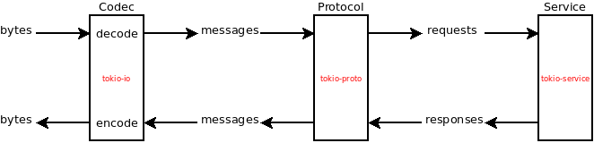
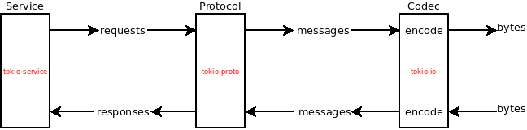

Introduction
The first part of this book does not contain any code. It explains some basics about the library we'll build, and the tools we'll use.
- chapter 1.1 explains what MessagePack-RPC is and what kind of problems is solves
- chapter 1.2 gives an overview of the Tokio stack
To make it easier to follow and to skip chapters, all the code is also available on github, in the rmp-rpc-demo repository. There is a branch per chapter.
The content of this book is also available on github, so feel free to submit PRs or file issues.
Why this book?
This guide does not intend to be a substitute to the tokio documentation.
Actually, if you're starting with Tokio, you will probably have to look into the official documentation quite often. The intention is to provide a concrete example of how to build things with Tokio. The documentation does a great jobs at explaining the concepts behind Tokio and introducing the different pieces of the ecosystem. But there are so many concepts to understand, and so many crates available that it can be hard at the beginning to know what you really need to build something (at least, that was my feeling when I started working on my first crate. By building a real world protocol step by step, we aim at gradually putting into application the concepts and crates presented in the official documentation.
Who is the target audience?
People who already know the basic concepts of Rust, and want to get started with Tokio.
Disclaimer
Two things:
- I am pretty much a beginner with Tokio and this book has not been under any review by qualified people yet. It may promote anti-patterns, contain errors, imprecisions, etc.
- This is work in progress. There are many things I'd like to add: more explanations, more detailed examples, TLS support, graceful shutdown for the server, etc. etc.
MessagePack-RPC
MessagePack-RPC is a Remote Procedure Call (RPC) that uses
messages serialized using the MessagePack format. If you have no idea what that
means, read on!
Remote Procedure Call
RPC stands for Remote Procedure Call. An RPC protocol defines a way for
processes to communicate. One process (we'll call it the server) opens an
input channel (usually a socket, but it can also be a stream like stdin for
example), and waits for commands. Then other processes (we'll call them
clients) can start sending messages to the server. The RPC protocol defines
defines the format of the messages, as well as how they are exchanged. The
wikipedia article gives
more details.
Example JSON-RPC
One widely used and simple RPC protocol is
JSON-RPC. Clients and server exchange
JSON messages. Clients can send two types of messages: requests and
notifications. A server can only send one type of message: reponses. When a
server receives a request, it must answer with a response. When it
receives a notification it must not answer.
A request message is a JSON string that looks like this:
{
"jsonrpc": "2.0",
"id": 3,
"method": "add",
"params": [2, 2],
}
- the
jsonrpcattribute is the version of the protocol. - the
idattribute identify a request. Each request has a different ID. - the
methodis the name of the command sent to the server. paramscan be an arbitrary JSON value. Here, it is a simple list of integers.
This requests is basically telling the server to add 2 and 2. Here is a
potential response:
{
"jsonrpc": "2.0",
"id": 3,
"result": "4",
}
- the
idis the same than the request'sid. If the client sends multiple requests, it can identify which response is for which request. We say that the protocol is multiplexed. - the
resultcan be an arbitrary JSON value. Here, it is an integer.
A notification is similar to a request, but since no response is expected by the clients, it does not have an ID:
{
"jsonrpc": "2.0",
"method": "save",
"params": "/home/me/a_file.txt",
}
Now that we have an idea of the concept of RPC, let's talk about MessagePack.
MessagePack
MessagePack is a serialization format.
A serialization format defines a representation of data as a stream of bytes. JSON is a serialization format, but there are other formats like protobuf or MessagePack.
Each programming language has its own representation of data and the power of
serialization formats is that they provide a common representation. For
instance a list of integer will is represented as "[1, 2, 3]" in JSON. But
both Rust and Python are able to deserialize this list and have their own
representation of it:
Rust JSON Python
serialize deserialize
Vec<u32> -----------> "[1,2,3]" -----------> [1, 2, 3]
In the context of Rust we can say that a serialization format defines how to
represent a struct as a stream of bytes. This is what
serde does.
The specificity of MessagePack is that it's similar to JSON, but is more
compact, which makes it faster and lighter to send over the network for
example. To quote msgpack.org, "it's like JSON, but fast and
small". You can find the specifications on
github. In the Rust
ecosystem, the main implementation of MessagePack is
rmp (which stands for Rust
MessagePack).
MessagePack-RPC
MessagePack-RPC is an RPC protocol that uses the MessagePack to exchange messages. It is very similar to the JSON-RPC protocol described above:
- it defines three types of messages: notifications, requests, and responses
- requests and responses carry an ID
- requests must be answered with a response that carries the same ID
- notifications must not be answered
The main differences with JSON-RPC are:
- it uses MessagePack instead of JSON
- messages don't have a "version" field
- message have a "type" field that tell wether they are notifications, requests or responses.
There are other minor differences but we don't intend to give an exhaustive list in this document.
Tokio
This chapter gives an overview of the Tokio stack. I'll assume that you understand what futures are and how they work. If not, I recommend reading this excellent blog post.
Disclaimer: Async IO and event loops are complex topics that I don't pretend to understand. I just know some basic concepts that I'll try to explain with my own words. Here is the thing: you don't need to understand these topics to use Tokio, and that what makes it awesome in my opinion.
tokio-core
Let's start with the main piece of Tokio:
tokio-core. tokio-core provides two things:
-
a
tokio_core::netmodule that provides TCP/UDP utilities. These utilities are intended to be similar to thestd::netones, but they are designed to be asynchronous: they are not blocking. For instance,std::net::TcpStream::connectblocks until the connection is established (or fails to be established) and the outcome is returned, whereastokio_core::net::TcpStream::connectimmediately returns a future that can be polled until it finishes. -
a
Core(aka "reactor" or "event loop") which runs futures. We can already run futures with threads (viastd::thread::spawnor pools of threads (viafutures_cpupool), so why use an event loop instead? I'm not entirely sure myself, but here are a few hints:- Threads are expensive when there are many of them, due to context switches. You don't want to spawn thousands of threads, especially for IO extensive work, since most of them are going to spend most of their time waiting anyway.
- Efficiently managing multiple threads is hard. Tokio's event loop handles this for us. I don't need to know how many threads there are, or which ones should be parked or unparked.
tokio-io, tokio-proto, and tokio-service
tokio-core is quite minimalistic, but tokio also provides a few crates that
make it easy to implement some common services, such as client and servers for
request/response based protocols.
tokio-iocontains traits and types to work asynchronously with streams of bytes.tokio-protoimplements some logic that is common to many protocols request/response based protocols.tokio-serviceprovides aServicetrait implements how a request is handled.
Here is an illustration of how these crates are used together to implement a server:

The server receives a stream of bytes from a socket. A Codec reads this
stream and decode meaningful messages. These messages are then passed to the
Protocol, which forwards the requests to the Service. The Protocol is
kind of a black box, but we can imagine that for multiplexed protocols (ie
protocol for which requests have an ID), it keeps track of the IDs and makes
sure responses are sent with the ID of the request they correspond to. The
Service handles the request and returns a response, which is in turn handled
by the Protocol, which passes it to the Codec that sends it.
The stack is quite similar for a client:

First implementation
In this part, we'll implement an incomplete MessagePack-RPC library using the whole tokio stack:
tokio-iofor the codec (see chapter 2.1)tokio-protofor the protocol (see chapter 2.2)tokio-servicefor the service (see chapter 2.3)
Why an "incomplete" library? We'll see that using only tokio-proto, we cannot
implement support for notifications. But worry not! this is something we'll fix
in part 3.
You can find the complete code for this chapter on github
Codec
In this chapter, we'll implement a Codec that converts a stream of bytes into
a stream of a messages.
Creating a new project
Let's start by creating a new project (cargo new --lib rmp-rpc-demo), and
adding a few dependencies in Cargo.toml:
[package]
name = "rmp-rpc-demo"
version = "0.0.1"
authors = ["You <you@example.com>"]
description = "a msgpack-rpc client and server based on tokio"
[dependencies]
bytes = "0.4"
rmpv = "0.4"
tokio-io = "0.1"
We'll split the crate in several modules:
.
├── Cargo.toml
├── LICENSE-MIT
├── README.md
└── src
├── lib.rs
├── client.rs
├── codec.rs
├── errors.rs
├── message.rs
├── protocol.rs
└── server.rs
Create the files: touch src/{client.rs,codec.rs,errors.rs,message.rs,protocol.rs,server.rs}. And in
src/lib.rs we'll add the dependencies we'll need for this chapter, and
declare our modules:
# #![allow(unused_variables)] #fn main() { extern crate bytes; extern crate rmpv; extern crate tokio_io; mod client; mod codec; mod errors; mod server; pub mod message; pub mod protocol; #}
Representing messages
The first thing to do, if we want to convert a stream of bytes into a stream of messages is to implement a data structure that represents a MessagePack-RPC message.
The MessagePack-RPC
specifications
defines three type of messages: requests, notifications, and responses. Let's
naively translate this to Rust. In src/message.rs:
# #![allow(unused_variables)] #fn main() { // src/message.rs // the specs defines a request as [type, msgid, method, params] pub struct Request { // this field must be 0 pub type: u32, pub id: u32, pub method: String, // this field is an "array of arbitrary objects" pub params: Vec<???>, } // the specs defines a response as [type, msgid, method, params] pub struct Response { // this field must be 1 pub type: u32, pub id: u32, pub error: Option<u32>, // this field is a arbitrary object pub result: ???, } pub struct Notification { // this field must be 2 pub type: u32, pub method: String, // an array of arbitrary value pub params: Vec<???>, } #}
This can be improved in multiple ways:
- The spec mentions "arbitrary values", but it's not clear how this translates
to Rust (hence the
???). Fortunatelyrmpvdoes have a type for "arbitrary messagepack values":Value. - The
typefield seems redundant. The rust type carries the same information than the MessagePack-RPCtypefield. We can get rid of it. - The
Responsetype could be improved: we have aResulttype in Rust, we don't need the error field to represent a error. Let's make theresultfield aResult. - We need one message type, not three. This can be solved with a
Messageenum.
It becomes:
# #![allow(unused_variables)] #fn main() { // src/message.rs use rmpv::Value; pub struct Request { pub id: u32, pub method: String, pub params: Vec<Value>, } pub struct Response { pub id: u32, pub result: Result<Value, Value>, } pub struct Notification { pub method: String, pub params: Vec<Value>, } pub enum Message { Request(Request), Response(Response), Notification(Notification), } #}
Codec
We now need to create a Codec. A codec is a type that implements
tokio_io::codec::Decoder
and
tokio_io::codec::Encoder.
Here is the skeleton of the code, in src/codec.rs:
# #![allow(unused_variables)] #fn main() { // src/codec.rs use std::io; use tokio_io::codec::{Decoder, Encoder}; use bytes::BytesMut; use message::Message; pub struct Codec; impl Decoder for Codec { // We want the decoder to return Message items type Item = Message; type Error = io::Error; fn decode(&mut self, src: &mut BytesMut) -> io::Result<Option<Self::Item>> { unimplemented!() } } impl Encoder for Codec { // We want the encoder to encode Message items type Item = Message; type Error = io::Error; fn encode(&mut self, msg: Self::Item, buf: &mut BytesMut) -> io::Result<()> { unimplemented!() } } #}
Encoding
Let's focus on the encoder first. We need to somehow turn a Message into a
stream of bytes conform to the specs.
rmpv::encode::write_value()
looks promising: it converts a Value into a stream of bytes and write these
bytes in a writer. All we have to do, is turn our Message into a Value. We
can implement this directly on Message:
# #![allow(unused_variables)] #fn main() { // src/message.rs use std::convert::From; use rmpv::{Value, Integer, Utf8String}; impl Message { // Turn the message into a MessagePack value fn as_value(&self) -> Value { match *self { Message::Request(Request { id, ref method, ref params}) => { Value::Array(vec![ Value::Integer(Integer::from(0)), Value::Integer(Integer::from(id)), Value::String(Utf8String::from(method.as_str())), Value::Array(params.clone()), ]) } Message::Response(Response { id, ref result }) => { let (error, result) = match *result { Ok(ref result) => (Value::Nil, result.to_owned()), Err(ref err) => (err.to_owned(), Value::Nil), }; Value::Array(vec![ Value::Integer(Integer::from(1)), Value::Integer(Integer::from(id)), error, result, ]) } Message::Notification(Notification {ref method, ref params}) => { Value::Array(vec![ Value::Integer(Integer::from(2)), Value::String(Utf8String::from(method.as_str())), Value::Array(params.to_owned()), ]) } } } #}
Our Encoder implementation becomes straightforward:
# #![allow(unused_variables)] #fn main() { impl Encoder for Codec { type Item = Message; type Error = io::Error; fn encode(&mut self, msg: Self::Item, buf: &mut BytesMut) -> io::Result<()> { Ok(rmpv::encode::write_value(&mut buf.writer(), &msg.as_value())?) } } #}
Decoding
The decoder is slightly more complicated.
A naive decoder
We'll start by implementing decode on Message using
rmpv::decode. Since it's
a little bit long, we'll split it in multiple methods: Message::decode only
decodes the message type, and then delegates the rest to Request::decode,
Response::decode and Notification::decode. We'll only show
Request::decode to keep the snippets small.
# #![allow(unused_variables)] #fn main() { // src/message.rs use rmpv::decode; // ... impl Message { // ... pub fn decode<R: Read>(rd: &mut R) -> Message { let msg = decode::value::read_value(rd)?; if let Value::Array(ref array) = msg { if array.len() < 3 { // notification are the shortest message and have 3 items panic!("Message too short"); } if let Value::Integer(msg_type) = array[0] { match msg_type.as_u64() { Some(0) => Message::Request(Message::decode(array)?), Some(1) => Message::Response(Message::decode(array)?), Some(2) => Message::Notification(Message::decode(array)?), _ => panic!("Invalid message type); } } else { panic!("Could not decode message type); } } else { panic!("Value is not an array"); } } } impl Request { fn decode(array: &[Value]) -> Self { if array.len() < 4 { panic!("Too short for a request") ; } let id = if let Value::Integer(id) = array[1] { id.as_u64().and_then(|id| Some(id as u32)).unwrap(); } else { panic!("Cannot decode request ID"); }; let method = if let Value::String(ref method) = array[2] { method.as_str().and_then(|s| Some(s.to_string())).unwrap(); } else { panic!("Cannot decode request method"); }; let params = if let Value::Array(ref params) = array[3] { params.clone() } else { panic!("Cannot decode request parameters"); }; Request {id: id, method: method, params: params} } } // etc. There is a similar decode() implementation for the Notification and Response types. #}
A very naive decoder implementation could be:
# #![allow(unused_variables)] #fn main() { impl Decoder for Codec { type Item = Message; type Error = io::Error; fn decode(&mut self, src: &mut BytesMut) -> io::Result<Option<Self::Item>> { let mut buf = io::Cursor::new(&src); Ok(Message::decode(&mut buf)) } } #}
Unfortunately, this won't work. It won't because we have no way to know if
there are enough bytes to read in the BytesMut buffer to decode a full
message. When tokio choses to call decode, the buffer may even be empty. And
given our Message::decode implementation, this will panic.
Adding error handling
If there are not enough bytes to read, we need to let tokio know that we need
more bytes. Tokio we'll re-call the method later, when there is more to read.
We do so by returning Ok(None). But how do we know we need more bytes? Error
handling! Message::decode could return a specific error when it fails to
decode a message because it's incomplete. We can create a new DecodeError
error type in src/errors.rs:
# #![allow(unused_variables)] #fn main() { // src/errors.rs use std::{error, fmt, io}; use rmpv::decode; #[derive(Debug)] pub enum DecodeError { // Some bytes are missing to decode a full msgpack value Truncated, // A byte sequence could not be decoded as a msgpack value, or this value is not a valid // msgpack-rpc message. Invalid, // An unknown IO error while reading a byte sequence UnknownIo(io::Error), } impl fmt::Display for DecodeError { fn fmt(&self, f: &mut fmt::Formatter) -> Result<(), fmt::Error> { error::Error::description(self).fmt(f) } } impl error::Error for DecodeError { fn description(&self) -> &str { match *self { DecodeError::Truncated => "could not read enough bytes to decode a complete message", DecodeError::UnknownIo(_) => "Unknown IO error while decoding a message", DecodeError::Invalid => "the byte sequence is not a valid msgpack-rpc message", } } fn cause(&self) -> Option<&error::Error> { match *self { DecodeError::UnknownIo(ref e) => Some(e), _ => None, } } } impl From<io::Error> for DecodeError { fn from(err: io::Error) -> DecodeError { match err.kind() { // If this occurs, it means `rmpv` was unable to read enough bytes to decode a full // MessagePack value, so we convert this error in a DecodeError::Truncated io::ErrorKind::UnexpectedEof => DecodeError::Truncated, io::ErrorKind::Other => { if let Some(cause) = err.get_ref().unwrap().cause() { if cause.description() == "type mismatch" { return DecodeError::Invalid; } } DecodeError::UnknownIo(err) } _ => DecodeError::UnknownIo(err), } } } impl From<decode::Error> for DecodeError { fn from(err: decode::Error) -> DecodeError { match err { decode::Error::InvalidMarkerRead(io_err) | decode::Error::InvalidDataRead(io_err) => From::from(io_err), } } } #}
With error handling, we can clean up our decode methods:
# #![allow(unused_variables)] #fn main() { // src/message.rs impl Message { pub fn decode<R: Read>(rd: &mut R) -> Result<Message, DecodeError> { let msg = decode::value::read_value(rd)?; if let Value::Array(ref array) = msg { if array.len() < 3 { return Err(DecodeError::Invalid); } if let Value::Integer(msg_type) = array[0] { match msg_type.as_u64() { Some(0) => return Ok(Message::Request(Request::decode(array)?)), Some(1) => return Ok(Message::Response(Response::decode(array)?)), Some(2) => return Ok(Message::Notification(Notification::decode(array)?)), _ => return Err(DecodeError::Invalid), } } else { return Err(DecodeError::Invalid); } } else { return Err(DecodeError::Invalid); } } // ... } // We only show the implementation for Request. It is similar for Notification // and Response impl Request { fn decode(array: &[Value]) -> Result<Self, DecodeError> { if array.len() < 4 { return Err(DecodeError::Invalid); } let id = if let Value::Integer(id) = array[1] { id.as_u64().and_then(|id| Some(id as u32)).ok_or(DecodeError::Invalid)? } else { return Err(DecodeError::Invalid); }; let method = if let Value::String(ref method) = array[2] { method.as_str().and_then(|s| Some(s.to_string())).ok_or(DecodeError::Invalid)? } else { return Err(DecodeError::Invalid); }; let params = if let Value::Array(ref params) = array[3] { params.clone() } else { return Err(DecodeError::Invalid); }; Ok(Request {id: id, method: method, params: params}) } } #}
Final decoder
The actual Decoder implementation now becomes:
# #![allow(unused_variables)] #fn main() { impl Decoder for Codec { type Item = Message; type Error = io::Error; fn decode(&mut self, src: &mut BytesMut) -> io::Result<Option<Self::Item>> { let res: Result<Option<Self::Item>, Self::Error>; // We keep track of how many bytes we read let position = { // We wrap the buffer into a Cursor that counts how many bytes we read let mut buf = io::Cursor::new(&src); loop { // Try to decode a message match Message::decode(&mut buf) { // We got a message, so we break out of the loop Ok(message) => { res = Ok(Some(message)); break; } Err(err) => { match err { // Not enough bytes to decode a full message. Return Ok(None) to tell // tokio to retry later when there is more to read DecodeError::Truncated => return Ok(None), // We decoded a MessagePack value, but it's not a valid message, // so we go on, and try to read another value. DecodeError::Invalid => continue, // Something went wrong, but we don't know why. // It's safer to return an error DecodeError::UnknownIo(io_err) => { res = Err(io_err); break; } } } } } buf.position() as usize }; // Remove the bytes we read from the buffer let _ = src.split_to(position); // Return the message (or the error if any) res } } #}
I hope the comments are detailed enough to understand what happens. To sum up, the decoder is called regularly by tokio, each time with three possible outcomes:
- We are able to read a message => return
Ok(message)and remove these bytes from the buffer. - There are not enough byte to read a message => return
Ok(None)to tell tokio to retry when there is more to read, and leave the buffer intact. - An error occurs:
- An invalid MessagePack value is read => try to read the next one
- An unknown io error occurs => return
Err(the_error)
Complete code
Cargo.toml
[package]
name = "rmp-rpc-demo"
version = "0.0.1"
authors = ["You <you@example.com>"]
description = "a msgpack-rpc client and server based on tokio"
[dependencies]
bytes = "0.4"
rmpv = "0.4"
tokio-io = "0.1"
tokio-proto = "0.1"
lib.rs
# #![allow(unused_variables)] #fn main() { extern crate bytes; extern crate rmpv; extern crate tokio_io; mod client; mod codec; mod errors; mod server; pub mod message; pub mod protocol; #}
message.rs
# #![allow(unused_variables)] #fn main() { use std::convert::From; use std::io::Read; use errors::*; use rmpv::{Value, Integer, Utf8String, decode}; #[derive(PartialEq, Clone, Debug)] pub enum Message { Request(Request), Response(Response), Notification(Notification), } #[derive(PartialEq, Clone, Debug)] pub struct Request { pub id: u32, pub method: String, pub params: Vec<Value>, } #[derive(PartialEq, Clone, Debug)] pub struct Response { pub id: u32, pub result: Result<Value, Value>, } #[derive(PartialEq, Clone, Debug)] pub struct Notification { pub method: String, pub params: Vec<Value>, } const REQUEST_MESSAGE: u64 = 0; const RESPONSE_MESSAGE: u64 = 1; const NOTIFICATION_MESSAGE: u64 = 2; impl Message { pub fn decode<R>(rd: &mut R) -> Result<Message, DecodeError> where R: Read, { let msg = decode::value::read_value(rd)?; if let Value::Array(ref array) = msg { if array.len() < 3 { // notification are the shortest message and have 3 items return Err(DecodeError::Invalid); } if let Value::Integer(msg_type) = array[0] { match msg_type.as_u64() { Some(REQUEST_MESSAGE) => { return Ok(Message::Request(Request::decode(array)?)); } Some(RESPONSE_MESSAGE) => { return Ok(Message::Response(Response::decode(array)?)); } Some(NOTIFICATION_MESSAGE) => { return Ok(Message::Notification(Notification::decode(array)?)); } _ => { return Err(DecodeError::Invalid); } } } else { return Err(DecodeError::Invalid); } } else { return Err(DecodeError::Invalid); } } pub fn as_value(&self) -> Value { match *self { Message::Request(Request { id, ref method, ref params, }) => { Value::Array(vec![ Value::Integer(Integer::from(REQUEST_MESSAGE)), Value::Integer(Integer::from(id)), Value::String(Utf8String::from(method.as_str())), Value::Array(params.clone()), ]) } Message::Response(Response { id, ref result }) => { let (error, result) = match *result { Ok(ref result) => (Value::Nil, result.to_owned()), Err(ref err) => (err.to_owned(), Value::Nil), }; Value::Array(vec![ Value::Integer(Integer::from(RESPONSE_MESSAGE)), Value::Integer(Integer::from(id)), error, result, ]) } Message::Notification(Notification { ref method, ref params, }) => { Value::Array(vec![ Value::Integer(Integer::from(NOTIFICATION_MESSAGE)), Value::String(Utf8String::from(method.as_str())), Value::Array(params.to_owned()), ]) } } } } impl Notification { fn decode(array: &[Value]) -> Result<Self, DecodeError> { if array.len() < 3 { return Err(DecodeError::Invalid); } let method = if let Value::String(ref method) = array[1] { method .as_str() .and_then(|s| Some(s.to_string())) .ok_or(DecodeError::Invalid)? } else { return Err(DecodeError::Invalid); }; let params = if let Value::Array(ref params) = array[2] { params.clone() } else { return Err(DecodeError::Invalid); }; Ok(Notification { method: method, params: params, }) } } impl Request { fn decode(array: &[Value]) -> Result<Self, DecodeError> { if array.len() < 4 { return Err(DecodeError::Invalid); } let id = if let Value::Integer(id) = array[1] { id.as_u64() .and_then(|id| Some(id as u32)) .ok_or(DecodeError::Invalid)? } else { return Err(DecodeError::Invalid); }; let method = if let Value::String(ref method) = array[2] { method .as_str() .and_then(|s| Some(s.to_string())) .ok_or(DecodeError::Invalid)? } else { return Err(DecodeError::Invalid); }; let params = if let Value::Array(ref params) = array[3] { params.clone() } else { return Err(DecodeError::Invalid); }; Ok(Request { id: id, method: method, params: params, }) } } impl Response { fn decode(array: &[Value]) -> Result<Self, DecodeError> { if array.len() < 2 { return Err(DecodeError::Invalid); } let id = if let Value::Integer(id) = array[1] { id.as_u64() .and_then(|id| Some(id as u32)) .ok_or(DecodeError::Invalid)? } else { return Err(DecodeError::Invalid); }; match array[2] { Value::Nil => { Ok(Response { id: id, result: Ok(array[3].clone()), }) } ref error => { Ok(Response { id: id, result: Err(error.clone()), }) } } } } #}
codec.rs
# #![allow(unused_variables)] #fn main() { use std::io; use bytes::{BytesMut, BufMut}; use rmpv; use tokio_io::codec::{Encoder, Decoder}; use errors::DecodeError; use message::Message; pub struct Codec; impl Decoder for Codec { type Item = Message; type Error = io::Error; fn decode(&mut self, src: &mut BytesMut) -> io::Result<Option<Self::Item>> { let res: Result<Option<Self::Item>, Self::Error>; let position = { let mut buf = io::Cursor::new(&src); loop { match Message::decode(&mut buf) { Ok(message) => { res = Ok(Some(message)); break; } Err(err) => { match err { DecodeError::Truncated => return Ok(None), DecodeError::Invalid => continue, DecodeError::UnknownIo(io_err) => { res = Err(io_err); break; } } } } } buf.position() as usize }; let _ = src.split_to(position); res } } impl Encoder for Codec { type Item = Message; type Error = io::Error; fn encode(&mut self, msg: Self::Item, buf: &mut BytesMut) -> io::Result<()> { Ok(rmpv::encode::write_value( &mut buf.writer(), &msg.as_value(), )?) } } #}
errors.rs
# #![allow(unused_variables)] #fn main() { use std::{error, fmt, io}; use rmpv::decode; #[derive(Debug)] pub enum DecodeError { Truncated, Invalid, UnknownIo(io::Error), } impl fmt::Display for DecodeError { fn fmt(&self, f: &mut fmt::Formatter) -> Result<(), fmt::Error> { error::Error::description(self).fmt(f) } } impl error::Error for DecodeError { fn description(&self) -> &str { match *self { DecodeError::Truncated => "could not read enough bytes to decode a complete message", DecodeError::UnknownIo(_) => "Unknown IO error while decoding a message", DecodeError::Invalid => "the byte sequence is not a valid msgpack-rpc message", } } fn cause(&self) -> Option<&error::Error> { match *self { DecodeError::UnknownIo(ref e) => Some(e), _ => None, } } } impl From<io::Error> for DecodeError { fn from(err: io::Error) -> DecodeError { match err.kind() { io::ErrorKind::UnexpectedEof => DecodeError::Truncated, io::ErrorKind::Other => { if let Some(cause) = err.get_ref().unwrap().cause() { if cause.description() == "type mismatch" { return DecodeError::Invalid; } } DecodeError::UnknownIo(err) } _ => DecodeError::UnknownIo(err), } } } impl From<decode::Error> for DecodeError { fn from(err: decode::Error) -> DecodeError { match err { decode::Error::InvalidMarkerRead(io_err) | decode::Error::InvalidDataRead(io_err) => From::from(io_err), } } } #}
You can find the complete code for this chapter on github
Protocol
In this chapter, we'll see how to use tokio-proto to implement our
MessagePack-RPC protocol.
Identifying the protocol
As explained in chapter 1.2, a typical tokio client
or server is made of three pieces: a codec, a protocol and a service. The next
step is to implement the protocol. tokio-proto provides implementations for
different types of protocols. As explained in the
documentation it distinguishes:
- pipelined and multiplexed protocols: a pipelined protocol is a protocol where requests are answered in the order in which they are received. A multiplexed protocol is a protocol for which it does not matter in which order requests are answered. However, that means that the client must be able to tell which reponse correspond to which request. For this purpose, requests carry an ID, and responses carry the ID of the request they correspond to.
- streaming and non-streaming protocol: in a streaming protocol, requests and responses can start being processed before it is entirely received. A non-streaming protocol is a protocol in which requests and responses must be completely received before being processed.
MessagePack-RPC is clearly a non-streaming protocol. But is it multiplexed?
Requests and responses have an ID, but notifications don't. So should we use
tokio_proto::multiplex or tokio_proto::pipeline? Well, none of them
actually. I asked the
question and the advice is
that custom protocols should not be implemented with tokio-proto.
For the sake of prototyping though, we'll just ignore notifications and come
back to them later. Then, MessagePack-RPC becomes a true multiplexed protocol,
and we can use
tokio_proto::multiplex::ClientProto
and
tokio_proto::multiplex::ServerProto
traits.
Implementation
First, we'll need to add tokio-proto to our dependencies.
In Cargo.toml:
[package]
name = "rmp-rpc-demo"
version = "0.0.1"
authors = ["You <you@example.com>"]
description = "a msgpack-rpc client and server based on tokio"
[dependencies]
bytes = "0.4"
rmpv = "0.4"
tokio-io = "0.1"
tokio-proto = "0.1"
And in src/lib.rs:
# #![allow(unused_variables)] #fn main() { extern crate bytes; extern crate rmpv; extern crate tokio_io; extern crate tokio_proto; mod client; mod codec; mod errors; mod server; pub mod message; pub mod protocol; #}
The protocol implemententation is straightforward, both for the client and for the server. All we have to do, is tell the protocol which codec it should use. Hint: it's the one we wrote in the previous post.
# #![allow(unused_variables)] #fn main() { // src/protocol.rs use tokio_proto::multiplex::{ClientProto, ServerProto}; use tokio_io::codec::Framed; pub struct Protocol; impl<T: AsyncRead + AsyncWrite + 'static> ServerProto<T> for Protocol { type Transport = Framed<T, Codec>; type Request = Message; type Response = Message; type BindTransport = Result<Self::Transport, io::Error>; fn bind_transport(&self, io: T) -> Self::BindTransport { Ok(io.framed(Codec)) } } impl<T: AsyncRead + AsyncWrite + 'static> ClientProto<T> for Protocol { type Request = Message; type Response = Message; type Transport = Framed<T, Codec>; type BindTransport = Result<Self::Transport, io::Error>; fn bind_transport(&self, io: T) -> Self::BindTransport { Ok(io.framed(Codec)) } } #}
The code is short, but many things happen:
- We set the
Transportassociated type toFramed<T, Codec>, whereTis a type that implementstokio::io::AsyncReadandtokio::io::AsyncWrite.Tcan be seen as a raw I/O object, such as a TCP/UDP or TLS stream. It manipulates bytes.Framed<T, Codec>is a higher level I/O objects that uses theCodecwe wrote earlier to convert this stream of bytes into a stream ofMessage. - We set the
RequestandResponseassociated types toMessagebecause that's ourCodecmanipulates (it encodesMessages and decodesMessages) - I'm less sure about the
BindTransportassociated types. It looks like implementation detail to me.
Looks good but when we compile we get a bunch of errors.
error[E0271]: type mismatch resolving `<tokio_io::codec::Framed<T, Codec> as futures::stream::Stream>::Item == (u64, Message)`
--> src/lib.rs:269:43
|
269 | impl<T: AsyncRead + AsyncWrite + 'static> ServerProto<T> for Protocol {
| ^^^^^^^^^^^^^^ expected enum `Message`, found tuple
|
= note: expected type `Message`
found type `(u64, Message)`
= note: required by `tokio_proto::multiplex::ServerProto`
Indeed, if we [take a closer look]((https://docs.rs/tokio-proto/0.1.1/tokio_proto/multiplex/trait.ClientProto.html)
at
tokio_proto::multiplex::ClientProto
we notice that Transport has the following trait bound:
# #![allow(unused_variables)] #fn main() { # // add dummy trait to have some syntax highlighting # trait Dummy { type Transport: 'static + Stream<Item = (RequestId, Self::Response), Error = io::Error> + Sink<SinkItem = (RequestId, Self::Request), SinkError = io::Error> # } #}
But as per the Framed documention,
our Framed<T, Codec> implements:
# #![allow(unused_variables)] #fn main() { Stream<Item=Codec::Item, Codec::Error> + Sink<SinkItem = Codec::Item, SinkError = Codec::Error> #}
which corresponds to:
# #![allow(unused_variables)] #fn main() { Stream<Item = Message, Error = io::Error> + Sink<SinkItem = Message, SinkError = io::Error> #}
This is because we're using the multiplexed version of ClientProto and
ServerProto. The codec needs to be updated to handle the message IDs. Again,
this is pretty easy if we ignore notifications.
Tweaking the codec
The decoder should now return a tuple (u64, Message) instead of a Message.
We can tweak the Decodec implementation to achieve this:
# #![allow(unused_variables)] #fn main() { // src/codec.rs impl Decoder for Codec { type Item = (u64, Message); type Error = io::Error; fn decode(&mut self, src: &mut BytesMut) -> io::Result<Option<Self::Item>> { let res: Result<Option<Self::Item>, Self::Error>; let position = { let mut buf = io::Cursor::new(&src); loop { match Message::decode(&mut buf) { Ok(message) => { res = match message { // We now need to extract the ID of the message // and return it separately Message::Request(Request { id, .. }) | Message::Response(Response { id, .. }) => { Ok(Some((id as u64, message))) }, Message::Notification(_) => panic!("Notifications not supported"), }; break; } Err(err) => { match err { DecodeError::Truncated => return Ok(None), DecodeError::Invalid => continue, DecodeError::UnknownIo(io_err) => { res = Err(io_err); break; } } } } } buf.position() as usize }; let _ = src.split_to(position); res } } #}
Similarly, the Encoder should now take an ID as argument. It becomes:
# #![allow(unused_variables)] #fn main() { // src/codec.rs impl Encoder for Codec { type Item = (u64, Message); type Error = io::Error; fn encode(&mut self, item: Self::Item, buf: &mut BytesMut) -> io::Result<()> { let (id, mut message) = item; match message { Message::Response(ref mut response) => { response.id = id as u32; } Message::Request(ref mut request) => { request.id = id as u32; } Message::Notification(_) => panic!("Notifications not supported"), } Ok(rmpv::encode::write_value(&mut buf.writer(), &message.as_value())?) } } #}
cargo build, and... it compiles!
Complete code
Cargo.toml
[package]
name = "rmp-rpc-demo"
version = "0.0.1"
authors = ["You <you@example.com>"]
description = "a msgpack-rpc client and server based on tokio"
[dependencies]
bytes = "0.4"
rmpv = "0.4"
tokio-io = "0.1"
tokio-proto = "0.1"
lib.rs
# #![allow(unused_variables)] #fn main() { extern crate bytes; extern crate rmpv; extern crate tokio_io; extern crate tokio_proto; mod client; mod codec; mod errors; mod server; pub mod message; pub mod protocol; #}
codec.rs
# #![allow(unused_variables)] #fn main() { use std::io; use bytes::{BytesMut, BufMut}; use rmpv; use tokio_io::codec::{Encoder, Decoder}; use errors::DecodeError; use message::{Message, Request, Response}; pub struct Codec; impl Decoder for Codec { type Item = (u64, Message); type Error = io::Error; fn decode(&mut self, src: &mut BytesMut) -> io::Result<Option<Self::Item>> { let res: Result<Option<Self::Item>, Self::Error>; let position = { let mut buf = io::Cursor::new(&src); loop { match Message::decode(&mut buf) { Ok(message) => { res = match message { Message::Request(Request { id, .. }) | Message::Response(Response { id, .. }) => { Ok(Some((id as u64, message))) }, Message::Notification(_) => panic!("Notifications not supported"), }; break; } Err(err) => { match err { DecodeError::Truncated => return Ok(None), DecodeError::Invalid => continue, DecodeError::UnknownIo(io_err) => { res = Err(io_err); break; } } } } } buf.position() as usize }; let _ = src.split_to(position); res } } impl Encoder for Codec { type Item = (u64, Message); type Error = io::Error; fn encode(&mut self, item: Self::Item, buf: &mut BytesMut) -> io::Result<()> { let (id, mut message) = item; match message { Message::Response(ref mut response) => { response.id = id as u32; } Message::Request(ref mut request) => { request.id = id as u32; } Message::Notification(_) => panic!("Notifications not supported"), } Ok(rmpv::encode::write_value(&mut buf.writer(), &message.as_value())?) } } #}
protocol.rs
# #![allow(unused_variables)] #fn main() { use std::io; use tokio_proto::multiplex::{ClientProto, ServerProto}; use tokio_io::{AsyncRead, AsyncWrite}; use tokio_io::codec::Framed; use message::Message; use codec::Codec; pub struct Protocol; impl<T: AsyncRead + AsyncWrite + 'static> ServerProto<T> for Protocol { type Transport = Framed<T, Codec>; type Request = Message; type Response = Message; type BindTransport = Result<Self::Transport, io::Error>; fn bind_transport(&self, io: T) -> Self::BindTransport { Ok(io.framed(Codec)) } } impl<T: AsyncRead + AsyncWrite + 'static> ClientProto<T> for Protocol { type Request = Message; type Response = Message; type Transport = Framed<T, Codec>; type BindTransport = Result<Self::Transport, io::Error>; fn bind_transport(&self, io: T) -> Self::BindTransport { Ok(io.framed(Codec)) } } #}
Service
The last piece of the Tokio stack is the Service trait. Our library does not
have to provide a Service implementation. Users can already build a
MessagePack-RPC server and client with the Protocol implementation the
library provides. In this chapter we'll build a simple example server using the
library as it stands. Then, we'll show how to provide a custom Service
implementation to make the library more user friendly.
You can find the complete code for this chapter on github
First example
In this part, we'll build a simple example server and make a few requests.
Specifications
The server we are going to build provides two methods add, and sub, that
takes two integers as parameters, and return respectively their sum and their
difference. I does not handle any notifications.
Creating an example
Rust makes it pretty easy to create example. We are going to put all the code under examples/calculator.rs:
mkdir examples
touch examples/calculator.rs
We'll need a few additional dependencies that we declare them in Cargo.toml:
[dev-dependencies]
tokio-core = "0.1"
tokio-service = "0.1"
futures = "0.1"
To make things easier, let also import everything we're going to need:
// examples/calculator.rs extern crate futures; extern crate rmpv; extern crate rmp_rpc; extern crate tokio_core; extern crate tokio_proto; extern crate tokio_service; use std::{error, io, fmt, thread}; use std::time::Duration; use tokio_core::reactor::Core; use tokio_proto::{TcpClient, TcpServer}; use tokio_service::{NewService, Service}; use rmpv::Value; use futures::{future, Future}; use rmp_rpc::{Message, Response, Request, Protocol}; fn main() { }
Server implementation
As explained
in the Service trait documentation, a server implements the Service trait.
We'll create an empty CalculatorService type, and implement Service for it:
# #![allow(unused_variables)] #fn main() { struct CalculatorService; impl Service for CalculatorService { type Request = Message; type Response = Message; type Error = String; type Future = Box<Future<Item = Message, Error = String>>; fn call(&self, req: Message) -> Self::Future { unimplemented!() } } #}
This little snippet already deserves some explanations:
- since our protocol encodes and decodes
Messages, theService::RequestandService::Responseassociated types are bothMessage. - for now, the
Service::Errortype does not really matter. We used aStringbecause that's the most simple type of error. - the trait imposes that the service returns a type that implements
Future<Item=Self::Message, Error=Self::Error>. The easiest way to return aFutureat the moment is to use trait objects, i.e. to return aBox<Future>. This makes the type a little verbose but that should improve very soon!
The actual implementation is a little bit tedious, because we have to parse the
arguments and handle all the cases where they are wrong. To keep
Service::call() readable, we implement the request handling on
CalculatorService directly, and only use Service::call() to dispatch the
request. The code looks like:
# #![allow(unused_variables)] #fn main() { struct CalculatorService; impl CalculatorService { fn handle_request(&self, method: &str, params: &[Value]) -> Result<Value, Value> { if params.len() != 2 { return Err("Expected two arguments".into()); } if !params[0].is_i64() || !params[1].is_i64() { return Err("Invalid argument".into()); } let res = match method { "add" => params[0].as_i64().unwrap() + params[1].as_i64().unwrap(), "sub" => params[0].as_i64().unwrap() - params[1].as_i64().unwrap(), _ => return Err("Unknown method".into()), }; Ok(res.into()) } } impl Service for CalculatorService { type Request = Message; type Response = Message; type Error = String; type Future = Box<Future<Item = Message, Error = String>>; fn call(&self, req: Message) -> Self::Future { match req { Message::Request( Request { method, params, .. }) => { let result = self.handle_request(&method, ¶ms); let response = Message::Response(Response { id: 0, result: result }); return Box::new(future::ok(response)); } _ => Box::new(future::err("Unsupported message type".into())), } } } #}
Notice that the response returned by the service always has its id attribute
set to 0. This is because the protocol handles the IDs for us and the service
does not need to know anything about the protocol.
We can now start serve the service through TCP. We'll use
tokio_proto::TcpServer
for this:
fn main() { let server = TcpServer::new(Protocol, "127.0.0.1:12345".parse().unwrap()); server.serve(CalculatorService {}); }
The first line creates a TcpServer that uses the MessagePack-RPC protocol we
implemented with tokio-proto, and that listens on 127.0.0.1:12345. The
seconds line starts the server, and tells it to run the CalculatorService.
Unfortunately:
$ cargo run --example calculator
Compiling rmp-rpc-demo v0.1.0 (file:///home/little-dude/rust/rmp-rpc-demo)
error[E0277]: the trait bound `CalculatorService: std::ops::Fn<()>` is not satisfied
--> examples/calculator.rs:53:12
|
53 | server.serve(CalculatorService {});
| ^^^^^ the trait `std::ops::Fn<()>` is not implemented for `CalculatorService`
|
= note: required because of the requirements on the impl of `tokio_service::NewService` for `CalculatorService`
error: aborting due to previous error
error: Could not compile `rmp-rpc-demo`.
The
documentation
shows that NewService is a trait that returns a service. This seems a little
bit weird: why would TcpServer::serve require a type that returns a service
and not a type that implements a service? The reason for this is that
internally, tokio creates a new service for each client that connects.
Let's listen to the compiler and implement NewService. We can do that
directly on CalculatorService:
# #![allow(unused_variables)] #fn main() { impl NewService for CalculatorService { type Request = Message; type Response = Message; type Error = String; type Instance = CalculatorService; fn new_service(&self) -> io::Result<Self::Instance> { Ok(self.clone()) } } #}
Aaaand...
error[E0277]: the trait bound `std::io::Error: std::convert::From<std::string::String>` is not satisfied
--> examples/calculator.rs:66:12
|
66 | server.serve(CalculatorService {});
| ^^^^^ the trait `std::convert::From<std::string::String>` is not implemented for `std::io::Error`
|
= help: the following implementations were found:
<std::io::Error as std::convert::From<rmpv::encode::ValueWriteError>>
<std::io::Error as std::convert::From<rmp::encode::MarkerWriteError>>
<std::io::Error as std::convert::From<rmp::encode::DataWriteError>>
<std::io::Error as std::convert::From<std::ffi::NulError>>
and 2 others
= note: required because of the requirements on the impl of `std::convert::Into<std::io::Error>` for `std::string::String`
error: aborting due to previous error
error: Could not compile `rmp-rpc-demo`.
The compiler confuses me here: nothing in the NewService trait indicates the
trait bound NewService::Error: Into<io::Error>. If a reader understands
what's going on here, please let me know. Anywya, since we can't implement
Into<io::Error> for String, we are left with two options:
- use our own error type that implements
Into<io::Error> - use
io::Errordireclty
We'll go for the first one, which is cleaner in my opinion:
# #![allow(unused_variables)] #fn main() { struct ServiceError(String); impl fmt::Display for ServiceError { fn fmt(&self, f: &mut fmt::Formatter) -> Result<(), fmt::Error> { write!(f, ServiceError({}), self.0) } } impl error::Error for DecodeError { fn description(&self) -> &str { "An error occured while processing a request" } fn cause(&self) -> Option<&error::Error> { None } } impl From<&str> for ServiceError { fn from(err: &str) -> Self { ServiceError(err.into()) } } impl From<ServiceError> for io::Error { fn from(err: ServiceError) -> Self { io::Error::new(io::ErrorKind::Other, err.0) } } #}
This is pretty basic. The From<&str> implementation allow us to make only
minimal changes to the Service and NewService traits. All we have to change
is the error type:
# #![allow(unused_variables)] #fn main() { impl NewService for CalculatorService { type Request = Message; type Response = Message; type Error = ServiceError; type Instance = CalculatorService; // ... } impl Service for CalculatorService { type Request = Message; type Response = Message; type Error = ServiceError; type Future = Box<Future<Item = Message, Error = ServiceError>>; // ... } #}
cargo build --example calculator now works.
The last step is to run the server in background:
fn main() { let addr = "127.0.0.1:12345".parse().unwrap(); let server = TcpServer::new(Protocol, addr); thread::spawn(move || { server.serve(CalculatorService {}); }); thread::sleep(Duration::from_millis(100)); // The client code goes here }
Client implementation
The client is much simpler:
fn main() { let addr = "127.0.0.1:12345".parse().unwrap(); let server = TcpServer::new(Protocol, addr); thread::spawn(move || { server.serve(CalculatorService {}); }); thread::sleep(Duration::from_millis(100)); let mut core = Core::new().unwrap(); let handle = core.handle(); let connection = TcpClient::new(Protocol).connect(&addr, &handle); let requests = connection.and_then(|client| { let req = Message::Request(Request { method: "add".into(), id: 0, params: vec![1.into(), 2.into()], }); client.call(req) .and_then(move |response| { println!("{:?}", response); let req = Message::Request(Request { method: "wrong".into(), id: 0, params: vec![], }); client.call(req) }) .and_then(|response| { println!("{:?}", response); Ok(()) }) }); let _ = core.run(requests); }
This code creates an event loop (core), a future (requests), and runs this
future until it completes (core.run()). We send two requests, and print the
responses. The first one is a valid requests, and the second one an invalid one
(it has an invalid method name). Just like for the server, we set the ID of the
requests to 0, and rely on the protocol to do the right thing.
When we run it the output should look like:
Response(Response { id: 0, result: Ok(Integer(PosInt(3))) })
Response(Response { id: 1, result: Err(String(Utf8String { s: Ok("Unknown method") })) })
Some readers may have noticed that we didn't implement the Service for the
client, which seems to contradict the diagram I showed in the chapter
2:
Actually, the Service is there. But it is already provided by tokio. The magic operates here:
# #![allow(unused_variables)] #fn main() { let connection = TcpClient::new(Protocol).connect(&addr, &handle); let requests = connection.and_then(|client| { // client implements `Service`! That's why we can do client.call(...) // but how come? }); #}
tokio_proto::TcpClient::connect()
returns
a
tokio_proto::Connect,
which is a future that returns a
tokio_proto::BindClient
when it completes. Here is BindClient:
# #![allow(unused_variables)] #fn main() { pub trait BindClient<Kind, T: 'static>: 'static { type ServiceRequest; type ServiceResponse; type ServiceError; type BindClient: Service<Request = Self::ServiceRequest, Response = Self::ServiceResponse, Error = Self::ServiceError>; fn bind_client(&self, handle: &Handle, io: T) -> Self::BindClient; } #}
BindClient is a complex type, and according to the documentation, it does not
implement Service. However, it does have a BindClient associated type that
does implement service. It is actually this associated type that is
returned, but we have to dive in the
sources
to see bind_client being called.
FIXME: there is still one thing I'm not sure about in the code above. Why does
the TcpClient::connect() method takes a handle as argument? Handles are used
to spawn tasks on the even loop so the only assumption I can make is that
internally, TcpClient::connect() spawns a task, but I don't know what.
Complete code
Cargo.toml
[package]
name = "rmp-rpc-demo"
version = "0.0.1"
authors = ["You <you@example.com>"]
description = "a msgpack-rpc client and server based on tokio"
[dependencies]
bytes = "0.4"
rmpv = "0.4"
tokio-io = "0.1"
tokio-proto = "0.1"
[dev-dependencies]
tokio-core = "0.1"
tokio-service = "0.1"
futures = "0.1"
examples/calculator.rs
extern crate rmpv; extern crate rmp_rpc_demo; extern crate tokio_core; extern crate tokio_proto; extern crate tokio_service; extern crate futures; use std::{error, io, fmt, thread}; use std::time::Duration; use tokio_core::reactor::Core; use tokio_proto::{TcpClient, TcpServer}; use tokio_service::{NewService, Service}; use rmpv::Value; use futures::{future, Future}; use rmp_rpc_demo::message::{Message, Response, Request}; use rmp_rpc_demo::protocol::Protocol; #[derive(Clone)] struct CalculatorService; impl Service for CalculatorService { type Request = Message; type Response = Message; type Error = ServiceError; type Future = Box<Future<Item = Message, Error = ServiceError>>; fn call(&self, req: Message) -> Self::Future { match req { Message::Request( Request { method, params, .. }) => { let result = self.handle_request(&method, ¶ms); let response = Message::Response(Response { id: 0, result: result }); return Box::new(future::ok(response)); } _ => Box::new(future::err("Unsupported message type".into())), } } } impl NewService for CalculatorService { type Request = Message; type Response = Message; type Error = ServiceError; type Instance = CalculatorService; fn new_service(&self) -> io::Result<Self::Instance> { Ok(self.clone()) } } #[derive(Debug)] struct ServiceError(String); impl fmt::Display for ServiceError { fn fmt(&self, f: &mut fmt::Formatter) -> Result<(), fmt::Error> { write!(f, "ServiceError({})", self.0) } } impl error::Error for ServiceError { fn description(&self) -> &str { "An error occured while processing a request" } fn cause(&self) -> Option<&error::Error> { None } } impl<'a> From<&'a str> for ServiceError { fn from(err: &'a str) -> Self { ServiceError(err.into()) } } impl From<ServiceError> for io::Error { fn from(err: ServiceError) -> Self { io::Error::new(io::ErrorKind::Other, err.0) } } fn main() { let addr = "127.0.0.1:12345".parse().unwrap(); let server = TcpServer::new(Protocol, addr); thread::spawn(move || { server.serve(CalculatorService {}); }); thread::sleep(Duration::from_millis(100)); let mut core = Core::new().unwrap(); let handle = core.handle(); let connection = TcpClient::new(Protocol).connect(&addr, &handle); let requests = connection.and_then(|client| { let req = Message::Request(Request { method: "add".into(), id: 0, params: vec![1.into(), 2.into()], }); client.call(req) .and_then(move |response| { println!("{:?}", response); let req = Message::Request(Request { method: "wrong".into(), id: 0, params: vec![], }); client.call(req) }) .and_then(|response| { println!("{:?}", response); Ok(()) }) }); let _ = core.run(requests); }
You can find the complete code for this chapter on github
Wrapping the server
The previous example was quite tedious to write. In this chapter, we'll see that we can provide some code in our library, that would make it easier to implement servers. Basically, we are going to move some code from our example into the library.
Preliminaries
We'll start by moving the [dev-dependencies] we used for our example as
regular dependencies.
In Cargo.toml:
[package]
name = "rmp-rpc-demo"
version = "0.0.1"
authors = ["You <you@example.com>"]
description = "a msgpack-rpc client and server based on tokio"
[dependencies]
bytes = "0.4"
futures = "0.1"
rmpv = "0.4"
tokio-core = "0.1"
tokio-io = "0.1"
tokio-proto = "0.1"
tokio-service = "0.1"
And the src/lib.rs should look like this (note that we also made the
protocol module private, and the client and server modules public):
# #![allow(unused_variables)] #fn main() { extern crate bytes; extern crate futures; extern crate rmpv; extern crate tokio_core; extern crate tokio_io; extern crate tokio_proto; extern crate tokio_service; mod codec; mod errors; mod protocol; pub mod client; pub mod message; pub mod server; #}
Implementation
In the previous example, our Service implementation was only matching on the
incoming messages, and dispatching the requests to the CalculatorService
implementation. We could spare users the pain to write this boilerplate code by
wrapping the Service, and providing another trait.
Basically, we would ask users to implement this trait:
# #![allow(unused_variables)] #fn main() { use rmpv::Value; pub trait Handler { fn handle_request(&mut self, method: &str, params: &[Value]) -> Result<Value, Value>; } #}
If we don't want users to implement Service themself, we need to provide an
implementation of it for any type that implements our Handler trait:
# #![allow(unused_variables)] #fn main() { use futures::Future; use tokio_service::Service; use message::Message; impl<T: Handler> Service for T { type Request = Message; type Response = Message; type Error = io::Error; type Future = BoxFuture<Self::Response, Self::Error>; fn call(&self, message: Self::Request) -> Self::Future { // TODO } } #}
And the actual implementation can amost be copy/pasted from the previous example:
# #![allow(unused_variables)] #fn main() { use futures::{future, Future}; use tokio_service::Service; use message::{Request, Response, Message}; impl<T: Handler> Service for T { type Request = Message; type Response = Message; type Error = ServiceError; type Future = Box<Future<Item = Message, Error = ServiceError>>; fn call(&self, message: Message) -> Self::Future { match req { Message::Request( Request { method, params, .. }) => { let result = self.handle_request(&method, ¶ms); let response = Message::Response(Response { id: 0, result: result }); return Box::new(future::ok(response)); } _ => Box::new(future::err("Unsupported message type".into())), } } } #}
The only thing missing is the ServiceError type, but again, we can just copy
paste it from our example. Let's put it under src/errors.rs:
# #![allow(unused_variables)] #fn main() { // src/errors.rs #[derive(Debug)] pub struct ServiceError(String); impl fmt::Display for ServiceError { fn fmt(&self, f: &mut fmt::Formatter) -> Result<(), fmt::Error> { write!(f, "ServiceError({})", self.0) } } impl error::Error for ServiceError { fn description(&self) -> &str { "An error occured while processing a request" } fn cause(&self) -> Option<&error::Error> { None } } impl<'a> From<&'a str> for ServiceError { fn from(err: &'a str) -> Self { ServiceError(err.into()) } } impl From<ServiceError> for io::Error { fn from(err: ServiceError) -> Self { io::Error::new(io::ErrorKind::Other, err.0) } } #}
Unfortunately, compilation fails:
compiling rmp-rpc-demo v0.1.0 (file:///home/corentih/rust/rmp-rpc-demo)
error[E0119]: conflicting implementations of trait `tokio_service::Service` for type `std::boxed::Box<_>`:
--> src/server.rs:20:1
|
20 | / impl<T: Handler> Service for T {
21 | | type Request = Message;
22 | | type Response = Message;
23 | | type Error = ServiceError;
... |
35 | | }
36 | | }
| |_^
|
= note: conflicting implementation in crate `tokio_service`
error[E0210]: type parameter `T` must be used as the type parameter for some local type (e.g. `MyStruct<T>`); only traits defined in the current crate can be implemented for a type parameter
--> src/server.rs:20:1
|
20 | / impl<T: Handler> Service for T {
21 | | type Request = Message;
22 | | type Response = Message;
23 | | type Error = ServiceError;
... |
35 | | }
36 | | }
| |_^
error: aborting due to 2 previous errors
error: Could not compile `rmp-rpc-demo`.
To learn more, run the command again with --verbose.
Since Service is defined in another crate, we cannot implement it for any
trait. That is the priviledge of the crate that defines the trait. The rule
that enforces this is called the
orphaned rule.
To work around this limitation, we can introduce a new type that is generic
over any type T that implement Handler:
# #![allow(unused_variables)] #fn main() { pub struct Server<T: Handler>(T); impl<T: Handler> Server<T> { pub fn new(handler: T) -> Self { Server(handler) } } impl<T: Handler> Service for Server<T> { // unchanged } #}
We forgot one last thing: Server<T> must not only implement Service, but
also NewService. In our example, we implemented NewService by cloning the
service. We can do the same here and clone Server<T>. That means T must be
clone-able, so we also add a Clone trait bound:
# #![allow(unused_variables)] #fn main() { pub struct Server<T: Handler + Clone>(T); impl<T: Handler + Clone> Server<T> { pub fn new(handler: T) -> Self { Server(handler) } } impl<T: Handler + Clone> Service for Server<T> { // unchanged } impl<T: Handler + Clone> NewService for Server<T> { type Request = Message; type Response = Message; type Error = ServiceError; type Instance = Server<T>; fn new_service(&self) -> io::Result<Self::Instance> { Ok(Server(self.0.clone())) } } #}
Finally, we can spare users the effort of starting a new TcpServer like we did in the example with:
use std::thread; use tokio_proto::TcpServer; use rmp_rpc_demo::protocol::Protocol; // ... fn main() { // ... let server = TcpServer::new(Protocol, addr); thread::spawn(move || { server.serve(CalculatorService {}); }); // ... }
Let's implement a serve() method on Server<T> that consumes it:
# #![allow(unused_variables)] #fn main() { use tokio_proto::TcpServer; use protocol::Protocol; impl<T: Handler + Clone> Server<T> { // ... pub fn serve(self, address: SocketAddr) { TcpServer::new(Protocol, address).serve(self) } } #}
Not that this is a blocking method. Users will still have to spawn it in a separate thread to run it in background.
Unfortunately, the code fails to compile:
error[E0277]: the trait bound `T: std::marker::Send` is not satisfied in `server::Server<T>`
--> src/server.rs:25:43
|
25 | TcpServer::new(Protocol, address).serve(self)
| ^^^^^ within `server::Server<T>`, the trait `std::marker::Send` is not implemented for `T`
|
= help: consider adding a `where T: std::marker::Send` bound
= note: required because it appears within the type `server::Server<T>`
Indeed, looking at the documentation for
TcpServer::serve(),
it appears that the argument has the following trait bounds:
NewService + Send + Sync + 'static
Well, let's just add these trait bounds:
# #![allow(unused_variables)] #fn main() { pub struct Server<T: Handler + Clone + Sync + Send + 'static>(T); impl<T: Handler + Clone + Sync + Send + 'static> Server<T> { // ... } impl<T: Handler + Clone + Sync + Send + 'static> Service for Server<T> { // ... } impl<T: Handler + Clone + Sync + Send + 'static> NewService for Server<T> { // ... } #}
And this time, it should compile!
Complete code
server.rs
# #![allow(unused_variables)] #fn main() { use std::net::SocketAddr; use std::io; use futures::{Future, future}; use rmpv::Value; use tokio_proto::TcpServer; use tokio_service::{NewService, Service}; use errors::ServiceError; use message::{Message, Response, Request}; use protocol::Protocol; pub trait Handler { fn handle_request(&self, method: &str, params: &[Value]) -> Result<Value, Value>; } pub struct Server<T: Handler + Clone + Sync + Send + 'static>(T); impl<T: Handler + Clone + Sync + Send + 'static> Server<T> { pub fn new(handler: T) -> Self { Server(handler) } pub fn serve(self, address: SocketAddr) { TcpServer::new(Protocol, address).serve(self) } } impl<T: Handler + Clone + Sync + Send + 'static> Service for Server<T> { type Request = Message; type Response = Message; type Error = ServiceError; type Future = Box<Future<Item = Message, Error = ServiceError>>; fn call(&self, message: Message) -> Self::Future { match message { Message::Request( Request { method, params, .. }) => { let result = self.0.handle_request(&method, ¶ms); let response = Message::Response(Response { id: 0, result: result }); return Box::new(future::ok(response)); } _ => Box::new(future::err("Unsupported message type".into())), } } } impl<T: Handler + Clone + Sync + Send + 'static> NewService for Server<T> { type Request = Message; type Response = Message; type Error = ServiceError; type Instance = Server<T>; fn new_service(&self) -> io::Result<Self::Instance> { Ok(Server(self.0.clone())) } } #}
You can find the complete code for this chapter on github
Wrapping the client
Just like for the server, there is some boilerplate code that can be spared to users. This kind of code is un-necessarily verbose for example:
# #![allow(unused_variables)] #fn main() { let req = Message::Request(Request { method: "add".into(), id: 0, params: vec![1.into(), 2.into()], }); client.call(req).and_then(|response| { // ... }); #}
We should not have to build a full Message in the first place. To send a
request, users should just have to call a method that takes two arguments: the
method, and the parameters. Let's build a Client type with such a method:
# #![allow(unused_variables)] #fn main() { // src/client.rs use std::io; use futures::{Future, BoxFuture}; use rmpv::Value; pub struct Client; pub type Response = Box<Future<Item = Result<Value, Value>, Error = io::Error>>; impl Client { pub fn request(&self, method: &str, params: Vec<Value>) -> Response { // TODO } } #}
This is a bit naive because as it stands, Client is an empty type. Instead,
it should wrap a type that implements Service and can send requests. It turns
out that tokio provides such a type:
tokio_proto::multiplex::ClientService.
All we have to do is wrap it and use it to send the requests:
# #![allow(unused_variables)] #fn main() { // src/client.rs // ... use tokio_proto::multiplex::ClientService; use message::{Message, Request}; pub struct Client(ClientService<TcpStream, Protocol>); pub type Response = Box<Future<Item = Result<Value, Value>, Error = io::Error>>; impl Client { pub fn request(&self, method: &str, params: Vec<Value>) -> Response { let req = Message::Request(Request { // we can set this to 0 because under the hood it's handle by tokio at the // protocol/codec level id: 0, method: method.to_string(), params: params, }); let resp = self.0.call(req).and_then(|resp| { match resp { Message::Response(response) => Ok(response.result), _ => panic!("Response is not a Message::Response"); } }); Box::new(resp) as Response } } #}
It is easy to adapt the example code to add a connect() method as well:
# #![allow(unused_variables)] #fn main() { // src/client.rs // ... use tokio_proto::TcpClient; // ... impl Client { pub fn connect(addr: &SocketAddr, handle: &Handle) -> Box<Future<Item = Client, Error = io::Error>> { let ret = TcpClient::new(Protocol) .connect(addr, handle) .map(Client); Box::new(ret) } // ... } #}
Complete code
client.rs
# #![allow(unused_variables)] #fn main() { use std::io; use std::net::SocketAddr; use futures::Future; use tokio_core::net::TcpStream; use tokio_core::reactor::Handle; use tokio_proto::multiplex::ClientService; use tokio_proto::TcpClient; use tokio_service::Service; use rmpv::Value; use message::{Message, Request}; use protocol::Protocol; pub struct Client(ClientService<TcpStream, Protocol>); pub type Response = Box<Future<Item = Result<Value, Value>, Error = io::Error>>; impl Client { pub fn connect(addr: &SocketAddr, handle: &Handle) -> Box<Future<Item = Client, Error = io::Error>> { let ret = TcpClient::new(Protocol) .connect(addr, handle) .map(Client); Box::new(ret) } pub fn request(&self, method: &str, params: Vec<Value>) -> Response { let req = Message::Request(Request { // we can set this to 0 because under the hood it's handle by tokio at the // protocol/codec level id: 0, method: method.to_string(), params: params, }); let resp = self.0.call(req).and_then(|resp| { match resp { Message::Response(response) => Ok(response.result), _ => panic!("Response is not a Message::Response"), } }); Box::new(resp) as Response } } #}
You can find the complete code for this chapter on github
Updated example
TODO: step by step explanations
Complete code
extern crate rmpv; extern crate rmp_rpc; extern crate tokio_core; extern crate tokio_proto; extern crate tokio_service; extern crate futures; use std::{error, io, fmt, thread}; use std::time::Duration; use tokio_core::reactor::Core; use tokio_proto::{TcpClient, TcpServer}; use tokio_service::{NewService, Service}; use rmpv::Value; use futures::{future, Future}; use rmp_rpc::message::{Message, Response, Request}; use rmp_rpc::protocol::Protocol; #[derive(Clone)] struct CalculatorServer; impl CalculatorService { fn handle_request(&self, method: &str, params: &[Value]) -> Result<Value, Value> { if params.len() != 2 { return Err("Expected two arguments".into()); } if !params[0].is_i64() || !params[1].is_i64() { return Err("Invalid argument".into()); } let res = match method { "add" => params[0].as_i64().unwrap() + params[1].as_i64().unwrap(), "sub" => params[0].as_i64().unwrap() - params[1].as_i64().unwrap(), _ => return Err("Unknown method".into()), }; Ok(res.into()) } } impl NewService for CalculatorServer { type Request = Message; type Response = Message; type Error = ServiceError; type Instance = CalculatorServer; fn new_service(&self) -> io::Result<Self::Instance> { Ok(self.clone()) } } impl Service for CalculatorServer { type Request = Message; type Response = Message; type Error = ServiceError; type Future = Box<Future<Item = Message, Error = ServiceError>>; fn call(&self, req: Message) -> Self::Future { match req { Message::Request( Request { method, params, .. }) => { let result = self.handle_request(&method, ¶ms); let response = Message::Response(Response { id: 0, result: result }); return Box::new(future::ok(response)); } _ => Box::new(future::err("Unsupported message type".into())), } } } #[derive(Debug)] struct ServiceError(String); impl fmt::Display for ServiceError { fn fmt(&self, f: &mut fmt::Formatter) -> Result<(), fmt::Error> { write!(f, "ServiceError({})", self.0) } } impl error::Error for ServiceError { fn description(&self) -> &str { "An error occured while processing a request" } fn cause(&self) -> Option<&error::Error> { None } } impl<'a> From<&'a str> for ServiceError { fn from(err: &'a str) -> Self { ServiceError(err.into()) } } impl From<ServiceError> for io::Error { fn from(err: ServiceError) -> Self { io::Error::new(io::ErrorKind::Other, err.0) } } fn main() { let addr = "127.0.0.1:12345".parse().unwrap(); let server = TcpServer::new(Protocol, addr); thread::spawn(move || { server.serve(CalculatorServer {}); }); thread::sleep(Duration::from_millis(100)); let mut core = Core::new().unwrap(); let handle = core.handle(); let connection = TcpClient::new(Protocol).connect(&addr, &handle); let requests = connection.and_then(|client| { let req = Message::Request(Request { method: "add".into(), id: 0, params: vec![1.into(), 2.into()], }); client.call(req) .and_then(move |response| { println!("{:?}", response); let req = Message::Request(Request { method: "wrong".into(), id: 0, params: vec![], }); client.call(req) }) .and_then(|response| { println!("{:?}", response); Ok(()) }) }); let _ = core.run(requests); }
You can find the complete code for this chapter on github
Second implementation
Using the full tokio stack, we built a basic MessagePack-RPC client and server
able to handle requests and responses, but unable to handle notifications. This
limitation is due to tokio-proto only providing protocol implementations for
request/response based protocols. The problem is that, there is no way to
extend tokio-proto, so we will have to re-implement something ourself.
We'll start by the server (the easy part), then implement a client. The
implementation of both component is heavily inspired by Tokio's tokio-proto
and tokio-service.
Preliminaries
Before starting implementing the server, let's cleanup a few things:
- remove the
protocolmodule:
rm -f src/protocol.rs
sed -i '/mod protocol;/d' src/lib.rs
- empty the
serverandclientmodules:
printf '' | tee src/{server.rs,client.rs}
- remove the
tokio_protoandtokio_servicedependencies:
sed -i '/tokio[-_]\(service\|proto\)/d' Cargo.toml src/lib.rs
- remove the "hack" in the codec that we introduced in the chapter
2.2, when we wanted the codec to handle IDs. This is
not necessary anymore since we won't rely on
tokio_proto. The code should be the same than at the end of chapter 2.1.
Complete code
Cargo.toml
[package]
name = "rmp-rpc-demo"
version = "0.0.1"
authors = ["You <you@example.com>"]
description = "a msgpack-rpc client and server based on tokio"
[dependencies]
bytes = "0.4"
futures = "0.1"
rmpv = "0.4"
tokio-core = "0.1"
tokio-io = "0.1"
src/lib.rs
# #![allow(unused_variables)] #fn main() { extern crate bytes; extern crate futures; extern crate rmpv; extern crate tokio_core; extern crate tokio_io; mod codec; mod errors; pub mod client; pub mod message; pub mod server; #}
src/client.rs
# #![allow(unused_variables)] #fn main() { // empty #}
src/server.rs
# #![allow(unused_variables)] #fn main() { // empty #}
codec.rs
# #![allow(unused_variables)] #fn main() { // src/codec.rs use std::io; use bytes::{BytesMut, BufMut}; use rmpv; use tokio_io::codec::{Encoder, Decoder}; use errors::DecodeError; use message::Message; pub struct Codec; impl Decoder for Codec { type Item = Message; type Error = io::Error; fn decode(&mut self, src: &mut BytesMut) -> io::Result<Option<Self::Item>> { let res: Result<Option<Self::Item>, Self::Error>; let position = { let mut buf = io::Cursor::new(&src); loop { match Message::decode(&mut buf) { Ok(message) => { res = Ok(Some(message)); break; } Err(err) => { match err { DecodeError::Truncated => return Ok(None), DecodeError::Invalid => continue, DecodeError::UnknownIo(io_err) => { res = Err(io_err); break; } } } } } buf.position() as usize }; let _ = src.split_to(position); res } } impl Encoder for Codec { type Item = Message; type Error = io::Error; fn encode(&mut self, msg: Self::Item, buf: &mut BytesMut) -> io::Result<()> { Ok(rmpv::encode::write_value( &mut buf.writer(), &msg.as_value(), )?) } } #}
You can find the complete code for this chapter on github
Re-implementing the server
We'll start by implementing the server. So let's empty src/server.rs, and
import everything we'll need:
# #![allow(unused_variables)] #fn main() { use std::io; use std::collections::HashMap; use std::error::Error; use std::net::SocketAddr; use futures::{Async, Poll, Future, Stream, Sink, BoxFuture}; use rmpv::Value; use tokio_core::net::{TcpStream, TcpListener}; use tokio_core::reactor::Core; use tokio_io::AsyncRead; use tokio_io::codec::Framed; use codec::Codec; use message::{Response, Message}; #}
When working on this library, I kept looking at Tokio's source code. As a
result, I ended up doing things in a very similar way: our library with provide
a Service and a ServiceBuilder traits, similar to Tokio's Service and
NewService traits.
Let's start with the Service trait, that must be implemented by users who
want build their MessagePack-RPC server. Unlike Tokio's Service trait, it
will have two methods instead of one: one to handle requests, and one to handle
notifications.
# #![allow(unused_variables)] #fn main() { pub trait Service { type Error: Error; type T: Into<Value>; type E: Into<Value>; fn handle_request(&mut self, method: &str, params: &[Value]) -> BoxFuture<Result<Self::T, Self::E>, Self::Error>; fn handle_notification(&mut self, method: &str, params: &[Value]) -> BoxFuture<(), Self::Error>; } #}
Note that these method do not take a Message as argument. This is to avoid
users this kind of code we wrote in the previous example:
# #![allow(unused_variables)] #fn main() { fn call(&self, msg: Message) -> SomeReturnType { match msg { Message::Request( Request { method, params, .. }) => { // handle the request } Message::Notification ( Notification { method, params, .. }) => { // handle the notification } _ => { // handle this as an error } } } #}
Also, notice that Service::handle_request() returns a future that produces a
Result<T, E> where T and E can be converted into values, instead of a
Result<Value, Value>. This will make implementors life a tiny bit easier, and
makes the signature nicer.
For each client, a new Service will be created, so we also a builder trait,
similar to NewService:
# #![allow(unused_variables)] #fn main() { pub trait ServiceBuilder { type Service: Service + 'static; fn build(&self) -> Self::Service; } #}
Finally, for each client a new future will be spawned. This future shall read
the messages coming from the client, dispatch them to the Service, and
forward the responses back to the client. This future is not a function but a
type that implements the Future trait. We'll call it Server. The server
owns a service instance, and a TCP stream connected to the client.
# #![allow(unused_variables)] #fn main() { struct Server<S: Service> { service: S, stream: TcpStream // ... } impl<S> Server<S> where S: Service + 'static { fn new(service: S, tcp_stream: TcpStream) -> Self { Server { service: service, stream: tcp_stream } } } impl<S> Future for Server<S> where S: Service + 'static { type Item = (); type Error = io::Error; fn poll(&mut self) -> Poll<Self::Item, Self::Error> { // TODO: // - read incoming messages from the client // - dispatch them to the Service // - send the responses back to the client } } #}
We'll start by turning the TcpStream into Framed<TcpStream, Codec> where
Codec is the MessagePack-RPC codec we wrote earlier. That will allow us to
read and write Message instead of bytes:
struct Server<S: Service> {
service: S,
stream: Framed<TcpStream, Codec>
// ...
}
impl<S> Server<S> where S: Service + 'static {
fn new(service: S, tcp_stream: TcpStream) -> Self {
Server { service: service, stream: tcp_stream.framed(Codec) }
}
}
The biggest task is to implement Future. The first thing it has to do is to
read the incoming messages and dispatch them to the service:
# #![allow(unused_variables)] #fn main() { impl<S> Future for Server<S> where S: Service + 'static { type Item = (); type Error = io::Error; fn poll(&mut self) -> Poll<Self::Item, Self::Error> { // Read the messages from the client loop { // Poll the stream match self.stream.poll().unwrap() { // We got a message, let's dispatch it to the Service Async::Ready(Some(msg)) => self.dispatch_message(msg), // The stream finished, probably because the client closed the connection. // There is no need for the server to continue so we return Async::Ready(()) // to notify tokio that this future finished Async::Ready(None) => return Ok(Async::Ready(())), // There is no new message ready to be read. // Let's just break out of this loop Async::NotReady => break, } } // TODO: send back the responses that the service procuced, if any // Important! Notify tokio that this future is not ready yet. By // returning Async::NotReady we tell tokio to re-schedule this future for // polling. Ok(Async::NotReady) } } #}
It's important to understand that when spawning a Server instance on a tokio
event loop, tokio will keep calling poll() as long as it return
Ok(Async::NotReady). In other words, the server runs until poll() returns
an error or Ok(Async::Ready(())).
Let's take a closer look at the Server::dispatch_message() method:
# #![allow(unused_variables)] #fn main() { impl<S> Server<S> where S: Service + 'static { // ... fn dispatch_message(&mut self, msg: Message) { match msg { Message::Request(request) => { let method = request.method.as_str(); let params = request.params; let response = self.service.handle_request(method, ¶ms); } Message::Notification(notification) => { let method = notification.method.as_str(); let params = notification.params; let outcome = self.service.handle_notification(method, ¶ms); } // Let's just silently ignore responses. Message::Response(_) => return; } } } #}
Pretty straightforward except that... we need to keep track of the futures
returned by handle_request() and handle_notfication() of course. Since
responses have an ID, it seems natural to use a hashmap and use the ID as a
key. For the notifications, a vector is enough:
# #![allow(unused_variables)] #fn main() { struct Server<S: Service> { service: S, stream: Framed<TcpStream, Codec>, request_tasks: HashMap<u32, BoxFuture<Result<S::T, S::E>, S::Error>>, notification_tasks: Vec<BoxFuture<(), S::Error>>, } impl<S> Server<S> where S: Service + 'static { fn new(service: S, tcp_stream: TcpStream) -> Self { Server { service: service, stream: tcp_stream.framed(Codec), request_tasks: HashMap::new(), notification_tasks: Vec::new(), } } fn dispatch_message(&mut self, msg: Message) { match msg { Message::Request(request) => { let method = request.method.as_str(); let params = request.params; let response = self.service.handle_request(method, ¶ms); // store the future, so that we can poll it until it completes self.request_tasks.insert(request.id, response); } Message::Notification(notification) => { let method = notification.method.as_str(); let params = notification.params; let outcome = self.service.handle_notification(method, ¶ms); // store the future, so that we can poll it until it completes self.notification_tasks.push(outcome); } Message::Response(_) => return, } } } #}
It remains to poll the futures returned by our service until they complete.
Futures returned by handle_request() return a Response that needs to be
sent back the client. Futures returned by handle_notification() don't return
anything, but it's important to poll them as well, to run them to completion.
We'll create two separate methods to poll these futures:
Server::process_requests() and Server::process_notifications():
# #![allow(unused_variables)] #fn main() { impl<S> Server<S> where S: Service + 'static { // ... fn process_notifications(&mut self) { // keep track of the futures that finished let mut done = vec![]; for (idx, task) in self.notification_tasks.iter_mut().enumerate() { match task.poll().unwrap() { // the future finished Async::Ready(_) => done.push(idx), // the future did not finished yet Async::NotReady => continue, } } // stop tracking the futures that finished for idx in done.iter().rev() { self.notification_tasks.remove(*idx); } } fn process_requests(&mut self) { // keep track of the futures that finished let mut done = vec![]; for (id, task) in &mut self.request_tasks { match task.poll().unwrap() { // this future finished. we send the response back to the client Async::Ready(response) => { let msg = Message::Response(Response { id: *id, result: response.map(|v| v.into()).map_err(|e| e.into()), }); done.push(*id); // send the response back to the client if !self.stream.start_send(msg).unwrap().is_ready() { panic!("the sink is full") } } // the future did not finished yet. We ignore it. Async::NotReady => continue, } } // stop tracking the futures that finished for idx in done.iter_mut().rev() { let _ = self.request_tasks.remove(idx); } } #}
I think the comments make the code clear enough. Of course we need to call these methods in poll():
# #![allow(unused_variables)] #fn main() { impl<S> Future for Server<S> where S: Service + 'static { type Item = (); type Error = io::Error; fn poll(&mut self) -> Poll<Self::Item, Self::Error> { loop { match self.stream.poll().unwrap() { Async::Ready(Some(msg)) => self.handle_msg(msg), Async::Ready(None) => { return Ok(Async::Ready(())); } Async::NotReady => break, } } self.process_notifications(); self.process_requests(); Ok(Async::NotReady) } } #}
We are almost done, but one subtility remains. If you noticed, when sending the
response, we use stream.start_send(). The
documentation
explains that this is not enough to actually send the response. Internally, for
performance reasons, the Sink may buffer the messages before sending them.
With only start_send() we cannot be sure that the data wether has actually
being written into the TCP socket, or wether the operation is pending.
To make sure the data is sent, we need to tell the sink to flush its buffers
with
Sink::poll_complete().
We could do this for each message, right after start_send(), but this would
kind of defeat the purpose of buffering. Instead, we'll flush after we
processed all the requests:
# #![allow(unused_variables)] #fn main() { impl<S> Future for Server<S> where S: Service + 'static { type Item = (); type Error = io::Error; fn poll(&mut self) -> Poll<Self::Item, Self::Error> { loop { match self.stream.poll().unwrap() { Async::Ready(Some(msg)) => self.handle_msg(msg), Async::Ready(None) => { return Ok(Async::Ready(())); } Async::NotReady => break, } } self.process_notifications(); self.process_requests(); self.stream.poll_complete().unwrap(); Ok(Async::NotReady) } } #}
Finally, we could try to make users life easier by providing a function to run a server on a Tokio event loop. It's not mandatory, but it will also show how the code we just wrote can be used:
# #![allow(unused_variables)] #fn main() { pub fn serve<B: ServiceBuilder>(address: &SocketAddr, service_builder: B) { let mut core = Core::new().unwrap(); let handle = core.handle(); let listener = TcpListener::bind(address, &handle).unwrap(); core.run(listener.incoming().for_each(|(stream, _address)| { let service = service_builder.build(); let server = Server::new(service, stream); handle.spawn(server.map_err(|_| ())); Ok(()) })).unwrap() } #}
A TCP listener creates a new service for each client that connects, and spawn a
new Server instance on the event loop. Once the server is spawned, Tokio
start's calling poll() and the server. This is kind of confusing, because our
MessagePack-RPC server actually works by spawning multiple Server (one per
client).
Complete code
server.rs
# #![allow(unused_variables)] #fn main() { use std::io; use std::collections::HashMap; use std::error::Error; use std::net::SocketAddr; use codec::Codec; use message::{Response, Message}; use futures::{Async, Poll, Future, Stream, Sink, BoxFuture}; use rmpv::Value; use tokio_core::net::{TcpStream, TcpListener}; use tokio_core::reactor::Core; use tokio_io::AsyncRead; use tokio_io::codec::Framed; pub trait Service { type Error: Error; type T: Into<Value>; type E: Into<Value>; fn handle_request( &mut self, method: &str, params: &[Value], ) -> BoxFuture<Result<Self::T, Self::E>, Self::Error>; fn handle_notification(&mut self, method: &str, params: &[Value]) -> BoxFuture<(), Self::Error>; } pub trait ServiceBuilder { type Service: Service + 'static; fn build(&self) -> Self::Service; } struct Server<S: Service> { service: S, stream: Framed<TcpStream, Codec>, request_tasks: HashMap<u32, BoxFuture<Result<S::T, S::E>, S::Error>>, notification_tasks: Vec<BoxFuture<(), S::Error>>, } impl<S> Server<S> where S: Service + 'static { fn new(service: S, tcp_stream: TcpStream) -> Self { Server { service: service, stream: tcp_stream.framed(Codec), request_tasks: HashMap::new(), notification_tasks: Vec::new(), } } fn dispatch_message(&mut self, msg: Message) { match msg { Message::Request(request) => { let method = request.method.as_str(); let params = request.params; let response = self.service.handle_request(method, ¶ms); self.request_tasks.insert(request.id, response); } Message::Notification(notification) => { let method = notification.method.as_str(); let params = notification.params; let outcome = self.service.handle_notification(method, ¶ms); self.notification_tasks.push(outcome); } Message::Response(_) => { return; } } } fn process_notifications(&mut self) { let mut done = vec![]; for (idx, task) in self.notification_tasks.iter_mut().enumerate() { match task.poll().unwrap() { Async::Ready(_) => done.push(idx), Async::NotReady => continue, } } for idx in done.iter().rev() { self.notification_tasks.remove(*idx); } } fn process_requests(&mut self) { let mut done = vec![]; for (id, task) in &mut self.request_tasks { match task.poll().unwrap() { Async::Ready(response) => { let msg = Message::Response(Response { id: *id, result: response.map(|v| v.into()).map_err(|e| e.into()), }); done.push(*id); if !self.stream.start_send(msg).unwrap().is_ready() { panic!("the sink is full") } } Async::NotReady => continue, } } for idx in done.iter_mut().rev() { let _ = self.request_tasks.remove(idx); } } } impl<S> Future for Server<S> where S: Service + 'static { type Item = (); type Error = io::Error; fn poll(&mut self) -> Poll<Self::Item, Self::Error> { loop { match self.stream.poll().unwrap() { Async::Ready(Some(msg)) => self.dispatch_message(msg), Async::Ready(None) => { return Ok(Async::Ready(())); } Async::NotReady => break, } } self.process_notifications(); self.process_requests(); self.stream.poll_complete().unwrap(); Ok(Async::NotReady) } } pub fn serve<B: ServiceBuilder>(address: &SocketAddr, service_builder: B) { let mut core = Core::new().unwrap(); let handle = core.handle(); let listener = TcpListener::bind(address, &handle).unwrap(); core.run(listener.incoming().for_each(|(stream, _address)| { let service = service_builder.build(); let server = Server::new(service, stream); handle.spawn(server.map_err(|_| ())); Ok(()) })).unwrap() } #}